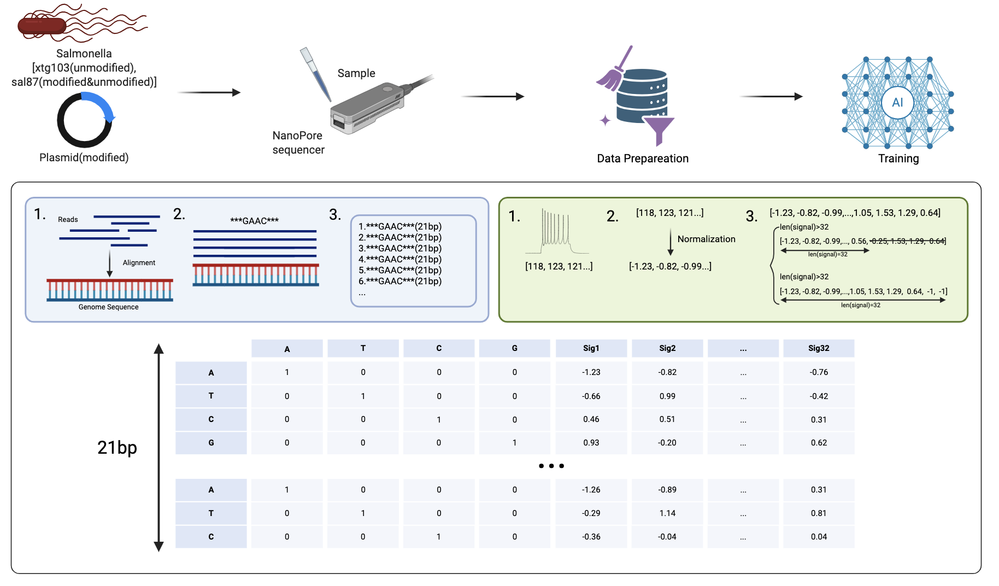
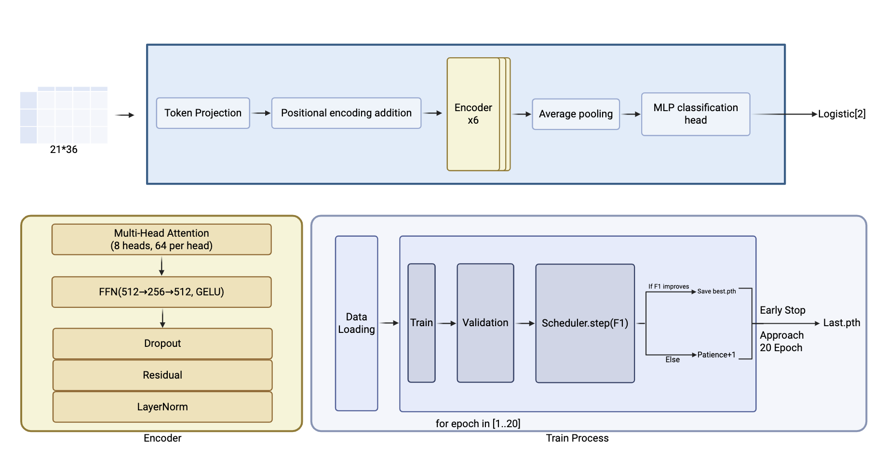

DNA Modification Detection from Nanopore Signals with Transformers
Genomics · Multimodal · Transformer
Pipeline
 Model Summary
- Inputs
- 21bp one-hot DNA and normalized current traces (fixed length 32), concatenated to 21×36.
- Backbone
- 6-layer Transformer encoder, 8 heads, GELU, residual+LN, dropout.
- Classifier
- Average pooling → MLP head → logistic output (binary).
- Data split
- Train/val on xtg103 and fully modified plasmid; test on sal87.
- Training
- 1–20 epochs, F1-driven LR scheduler, early stopping,
best.pth/last.pth. - Finding
- ~20% modified proportion predicted on sal87 under current setup.